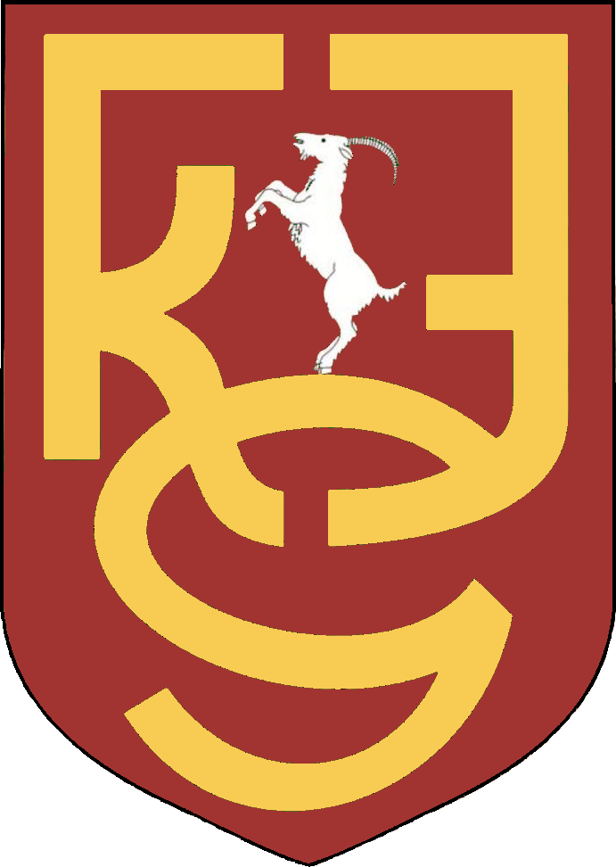

A versenyről
Bács-Kiskun vármegye bármely középiskolás tanulója indulhat a versenyen. Minden évfolyam számára egy kategória lesz, ám a díjazásnál figyelembe vesszük az alsóbb évfolyamosok kimagasló eredményeit.
A verseny során olyan matematika feladatokat kell megoldani, melyeket csak programozási eszközök segítségével valósítható meg. Két fordulóból áll: az első 20 kódértelmező feladatból, míg a második 6 matematikai kérdésből áll, mihez egy program elkészítése szükséges.
Fordulók
1. forduló: 2026-12-00 (helyszín: saját iskola) - 14:00-16:00
2. forduló: 2027-01-00 (helyszín: kijelölt iskolák) - 14:00-17:00
Jelentkezés
A jeletkezés 1000 forintba kerül, mindenki az iskoláján keresztül teheti meg.
Díjazás
Iskola típustól és évfolyamtól függetlenül az első 20 helyezet meghívásra kerül az eredményhirdetésre és 3000-10000 Ft értékű díjban részesül helyezéséhez képest. Emellett az évfolyamonként kíváló eredményt elérő versenyzők külön díjban részesülnek.
Minta feladat
A 2. fordulóban ilyen típusú feladatokra lehet számítani (nehezebb fajta):
Csuti tanárnőnek 6 db 6 oldalú dobókockája van. Először egy dobókockával dob, és a kidobott szám határozza meg, hogy következőnek hány kockával fog dobni. Az ezekkel a kockákkal dobott számok összege fogja megadni, hogy a névsorban hányadik gyerek felel. Ezt a folyamatot nevezzük egy dobásfolyamatnak. (A kockák 1-től 6-ig vannak számozva.) Pl.: első dobás: 5 >> dobás 5 db kockával >> kidobott számok: 1+2+6+5+2= 16. diák felel. (Válaszait százalékban 2 tizedesjegy pontossággal adja meg.)
a) Hanyadik gyerek felel a legnagyobb eséllyel és mennyi százalékkal?
b) Hanyadik prímszorszámú gyerek felel a legnagyobb eséllyel és mennyi százalékkal?
Köszönjük szponzorainknak a támogatást!